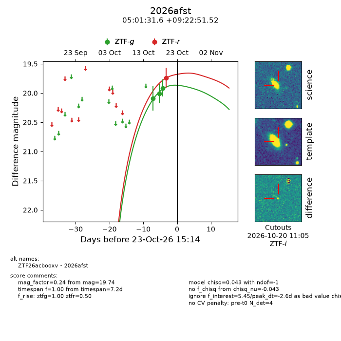
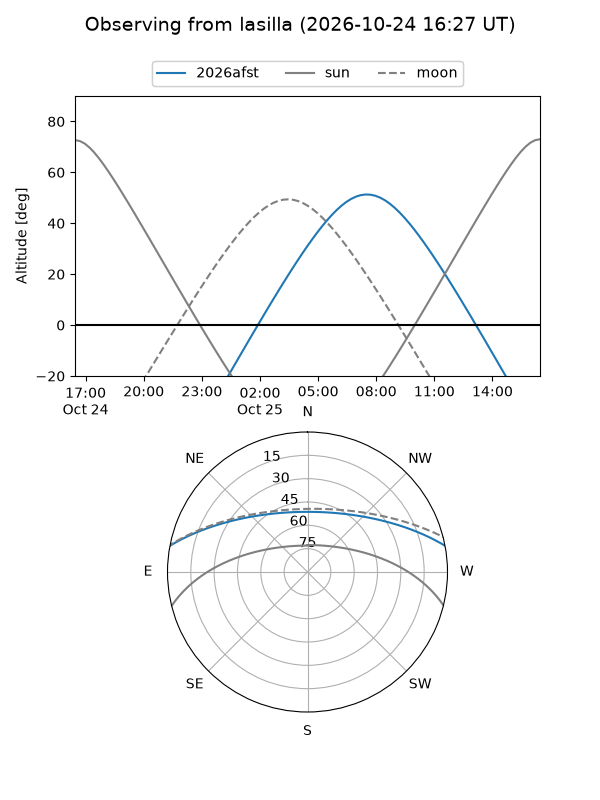
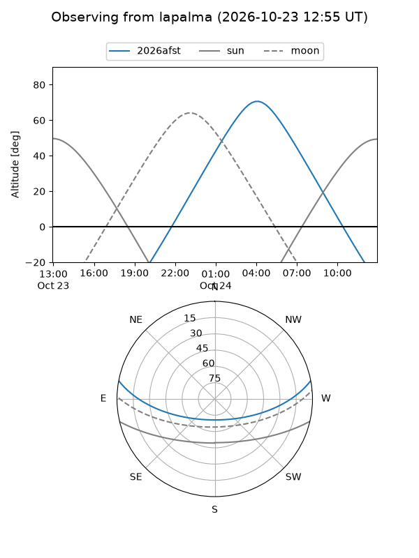
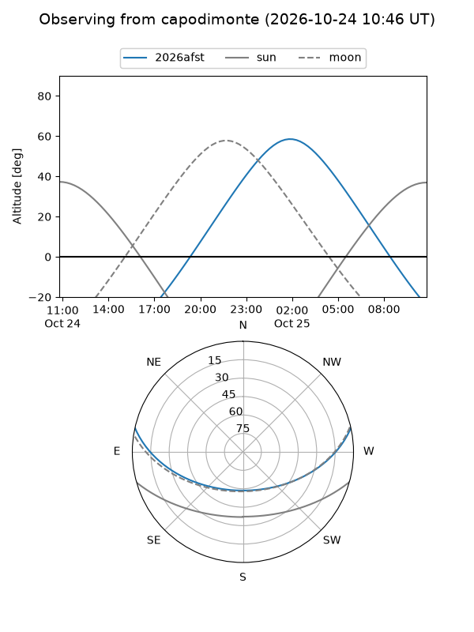
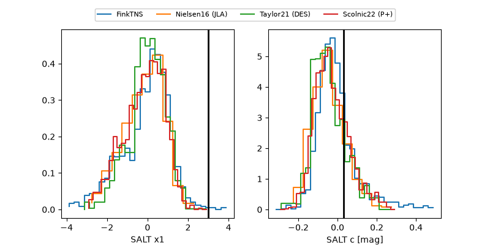

2026afst
Target 2026afst at 2026-10-23 15:16
Aliases and brokers:
FINK-ZTF: ztf.fink-portal.org/ZTF26acbooxv
Lasair-ZTF: lasair-ztf.lsst.ac.uk/objects/ZTF26acbooxv
ALeRCE-ZTF: alerce.online/object/ZTF26acbooxv
YSE-PZ: ziggy.ucolick.org/yse/transient_detail/2026afst
TNS name: wis-tns.org/object/2026afst
Direct TNS query: direct search
alt names
ZTF26acbooxv (ztf,fink_ztf)
2026afst (tns,yse)
Coordinates:
equatorial (ra, dec) = 75.3815,+9.38098
equatorial (HMS+DMS) = 05:01:31.57,+09:22:51.52
galactic (l, b) = (190.9886,-19.31917)
Flags:
peak dt: -2.6
Photometry:
last ztfg=19.91, ztfr=19.74
3 ztfg, 1 ztfr detections
Lightcurve

Visibility



Additional plots
